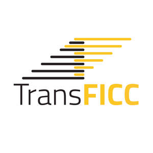
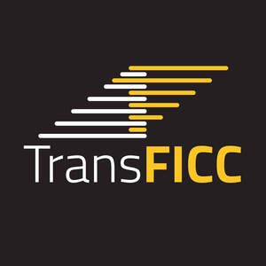
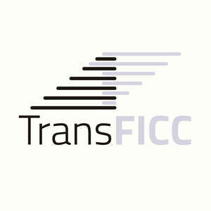

Trade Mark Journal No.2025/043 24 October 2025
UK00004277024 13 October 2025 (9,42)
Mark 1
Mark 2

Mark 3
Mark 4

Mark 5
Mark 6

- Class 9
- Computer software for use in finance, financial services, for facilitating financial transactions, for arranging financial transactions, and for use as an application programming interface (API); computer software for facilitating and processing financial transactions in the field of fixed income or derivatives markets; recorded computer software for use in finance, financial services, for facilitating financial transactions, for arranging financial transactions, and for use as an application programming interface (API); recorded computer software for facilitating and processing financial transactions in the field of fixed income or derivatives markets; computer software applications for use in finance, financial services, for facilitating financial transactions, for arranging financial transactions, and for use as an application programming interface (API); computer software applications for facilitating and processing financial transactions in the field of fixed income or derivatives markets; computer software applications for mobile devices for use in finance, financial services, for facilitating financial transactions, for arranging financial transactions, and for use as an application programming interface (API); computer software applications for mobile devices for facilitating and processing financial transactions in the field of fixed income or derivatives markets; compilers; compiler software; software compiling tools; software development kit [SDK]; software development programs; software development programs for use in finance, financial services, for facilitating financial transactions, for arranging financial transactions, and for use as an application programming interface (API); software development programs for facilitating and processing financial transactions in the field of fixed income or derivatives markets; software drivers; software for arranging online transactions; software for arranging online financial transactions; software for commerce over a global communications network; software for the processing of business transactions.
- Class 42
- Application service provider (ASP); Application service provider (ASP), namely, hosting computer software applications of others for financial transactions and financial services; server hosting; web hosting; hosting internet sites for others; hosting of computer software applications for others; hosting of computer software applications for others for use in finance, financial services, for facilitating financial transactions and for arranging financial transactions; hosting of computer software applications for others for facilitating and processing financial transactions in the field of fixed income or derivatives markets; hosting of software for financial transactions; hosting of software for use in finance, financial services, for facilitating financial transactions and for arranging financial transactions; hosting of software for facilitating and processing financial transactions in the field of fixed income or derivatives markets; hosting of computerized data, files, applications and information for use in finance, financial services, for facilitating financial transactions and for arranging financial transactions; hosting of computerized data, files, applications and information for facilitating and processing financial transactions in the field of fixed income or derivatives markets; hosting of databases for use in finance, financial services, for facilitating financial transactions and for arranging financial transactions; hosting of databases for facilitating and processing financial transactions in the field of fixed income or derivatives markets; hosting of portals on the internet for use in finance, financial services, for facilitating financial transactions and for arranging financial transactions; hosting of portals on the internet for facilitating and processing financial transactions in the field of fixed income or derivatives markets; hosting of servers for use in finance, financial services, for facilitating financial transactions and for arranging financial transactions; hosting of servers for facilitating and processing financial transactions in the field of fixed income or derivatives markets; hosting on-line web facilities for others; hosting on-line web facilities for others in the field of finance, financial services, for facilitating financial transactions and for arranging financial transactions; hosting on-line web facilities for others for facilitating and processing financial transactions in the field of fixed income or derivatives markets; hosting platforms on the Internet; Application service provider, namely, hosting software platforms of others on the internet in the field of finance, financial services, for facilitating financial transactions and for arranging financial transactions; Application service provider, namely, hosting software platforms of others on the internet for facilitating and processing financial transactions in the field of fixed income or derivatives markets; Software as a service (SAAS) services featuring software for use in finance, financial services, for facilitating financial transactions and for arranging financial transactions; Software as a service (SAAS) services featuring software for facilitating and processing financial transactions in the field of fixed income or derivatives markets; rental and updating of computer software; rental and updating of computer software for use in finance, financial services, for facilitating financial transactions and for arranging financial transactions; rental and updating of computer software for facilitating and processing financial transactions in the field of fixed income or derivatives markets; computer software consultancy services; design and development of computer software; software customisation and development services; custom design and development of computer software; software engineering; information, advisory and consultancy services in relation to all of the aforementioned services.
TransFICC Limited
Representative: Albright IP Limited